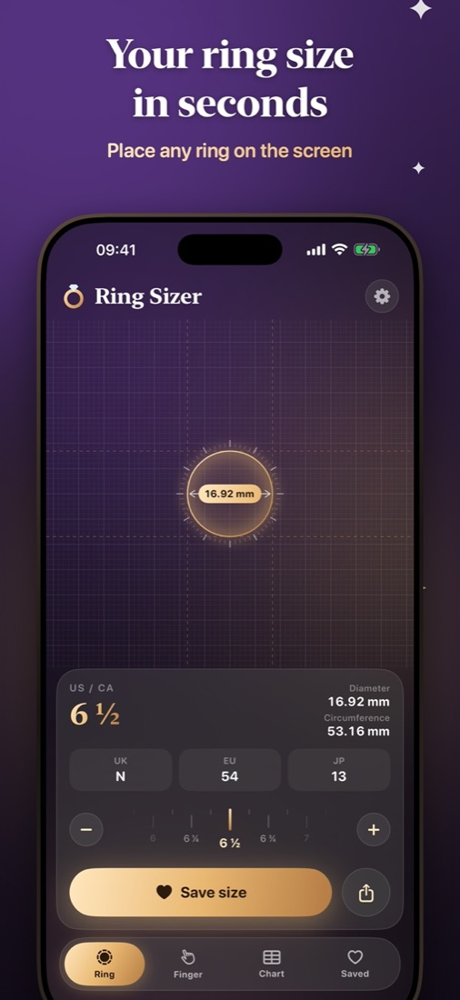
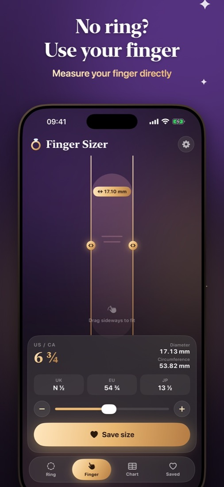
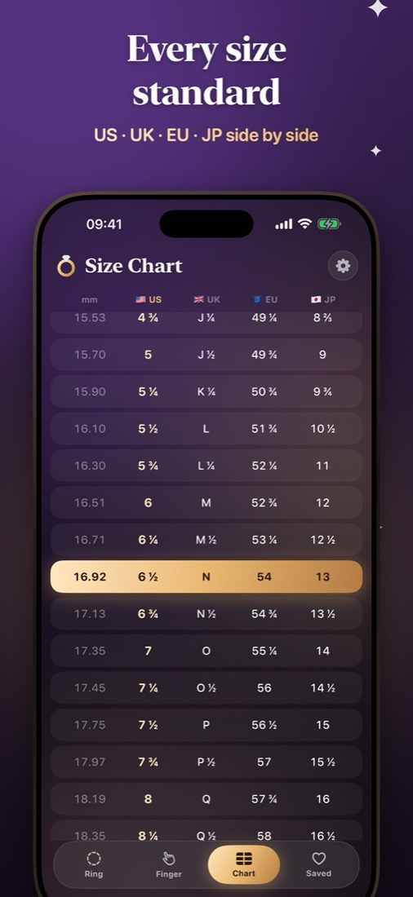
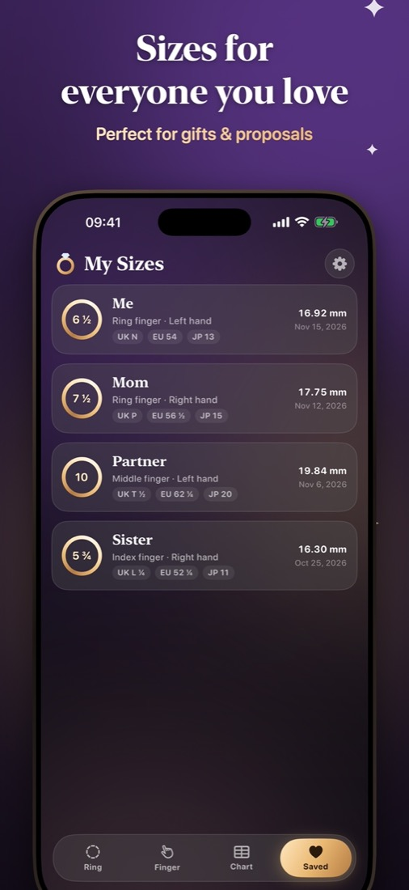
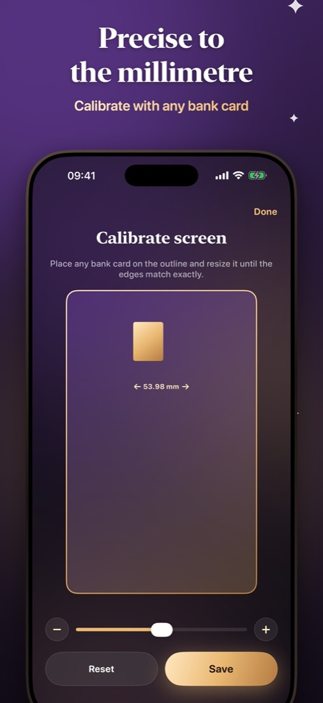

Find your ring size in seconds.
Place any ring on your iPhone or iPad screen, or measure your finger directly. Ring Sizer draws a true-to-scale circle using your device's exact pixel density and shows US, UK, EU and JP sizes instantly.





The ring sizer and size chart are free. Ring Sizer Pro (weekly with a free trial for eligible new subscribers, or yearly) adds the finger sizer, saved sizes and card calibration.
Yüzük ölçünü saniyeler içinde bul.
Herhangi bir yüzüğü iPhone ya da iPad ekranına koy veya parmağını doğrudan ölç. Ring Sizer, cihazının gerçek piksel yoğunluğuyla birebir ölçekli bir daire çizer ve US, UK, EU ve JP ölçülerini anında gösterir.
Yüzük ölçer ve ölçü tablosu ücretsizdir. Ring Sizer Pro (uygun yeni abonelere ücretsiz denemeli haftalık ya da yıllık) parmak ölçer, kayıtlı ölçüler ve kart kalibrasyonu ekler.